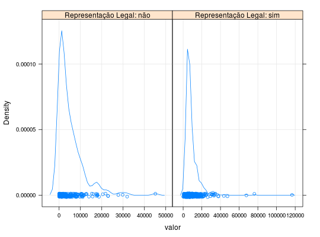

Valores Pagos de Seguros sob Influência de
Dados referentes aos valores pagos de seguros individuais por danos com acidentes pessoais no período de janeiro de 1998 a junho de 1999 (18 meses). O estudo completo (Jong e Heller, 2008) contém o acompanhamento dos seguros desde 1989. No período considerado aqui foram pagos 769 seguros, sendo armazenadas as informações: se houve representação legal, tempo operacional para pagamento e mês em que ocorreu o acidente.
Format
Um data.frame com 769 observações e 4 variáveis.
valor- Valor pago do seguro, em dólares australianos.
rl- Fator com dois níveis que indica, se no seguro em análise, há representação legal do indivíduo.
mes- Fator com 15 níveis que indica o mês de ocorrência do acidente. Os níveis deste fator são codificados e não informou-se quais os meses que eles representam.
to- Tempo operacional para pagamento do seguro. Essa variável assume valores de 0,1 a 31,9, pois são considerados apenas os 18 últimos meses do estudo.
Source
PAULA (2004), Exemplo 2.4.3, pág. 136.
References
De Jong, P., Heller, G. Z. (2008). Generalized linear models for insurance data (Vol. 136). Cambridge: Cambridge University Press.
Examples
data(PaulaEg2.4.3)#> Warning: data set ‘PaulaEg2.4.3’ not foundstr(PaulaEg2.4.3)#> 'data.frame': 769 obs. of 4 variables: #> $ valor: num 120 290 30 40 21450 ... #> $ rl : Factor w/ 2 levels "não","sim": 1 1 1 1 2 1 2 1 1 2 ... #> $ mes : Factor w/ 15 levels "100","101","103",..: 4 7 7 10 10 13 14 15 15 4 ... #> $ to : num 0.1 0.1 0.1 0.1 0.1 0.1 0.1 0.1 0.1 0.2 ...# Número de seguros pagos em cada combinação de mês e # representação legal ftable(table(PaulaEg2.4.3[, c("mes", "rl")]))#> rl não sim #> mes #> 100 0 1 #> 101 0 1 #> 103 34 93 #> 104 38 111 #> 105 38 75 #> 106 30 81 #> 107 19 68 #> 108 18 34 #> 109 19 31 #> 110 14 28 #> 111 5 13 #> 112 7 5 #> 113 2 0 #> 114 1 1 #> 115 2 0table(PaulaEg2.4.3[, c("rl")])#> #> não sim #> 227 542library(lattice) xyplot(log(valor) ~ to | rl, data = PaulaEg2.4.3, type = c("p", "g", "smooth"), lwd = 2, strip = strip.custom( strip.names = TRUE, var.name = "Representação Legal", sep = ": "))densityplot(~valor | rl, data = PaulaEg2.4.3, grid = TRUE, scales = list(x = list(relation = "free")), strip = strip.custom( strip.names = TRUE, var.name = "Representação Legal", sep = ": "))